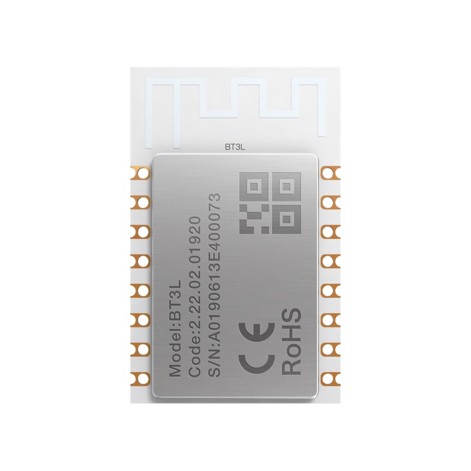

Complete technical specifications based on official Tuya datasheet (updated 2024-08-30).
| Chipset | Telink TLSR8250F512ET32, 32-bit MCU |
|---|---|
| Flash | 4 Mbits (512 KB) |
| SRAM | 48 KB |
| CPU Frequency | 48 MHz |
| Protocol | Bluetooth LE 5.0 / 2.4G |
| Voltage | 3.0V – 3.6V (typical 3.3V) |
| Module Size | 16±0.35 mm (W) × 24±0.35 mm (L) × 3.3±0.15 mm (H) PCB: 0.8±0.1 mm thick |
| Operating Temperature | -40°C to +85°C |
| Antenna | PCB on-board antenna, 2.5 dBi gain |
| Pin Count | 9 reusable I/O ports (see pin table for details) |
| Peripherals | 5× PWM (plus other GPIO functions) |
| Security | Hardware AES encryption built-in |
| FCC ID | 2ANDL-BT3L |
Real-world use cases enabled by this module.
Dimmable LED drivers and RGB controllers for Bluetooth-connected smart lighting products.
Smart low-power sensors, beacons, and connected home devices with BLE mesh capability.
Ideal for battery-powered IoT sensors due to the Telink chipset's industry-leading low power consumption.
Asset tracking and proximity beacon applications with hardware AES security.
The Telink TLSR8250 is renowned for its industry-leading low power consumption, making the BT3L ideal for battery-powered BLE sensor devices.
Built-in hardware AES encryption provides robust security for BLE communication without consuming CPU cycles.
Bluetooth 5.0 support enables longer range, higher speed, and improved coexistence with 2.4GHz Wi-Fi networks.